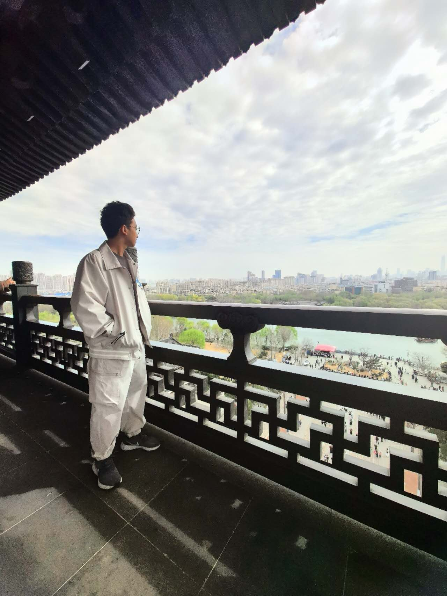

Hao Lun Li
Current Location: Jinan, China
My Projects

Lighthouse Effect: Founder
Designed REACH framework as 5-step plan for youth, curated advocacy thru vids/articles, partnered w/ Future of Investment campaign, reached 400+ youth.

Contact Me
Email: haolun7788@gmail.com
LinkedIn: linkedin.com/in/hao-lun-li